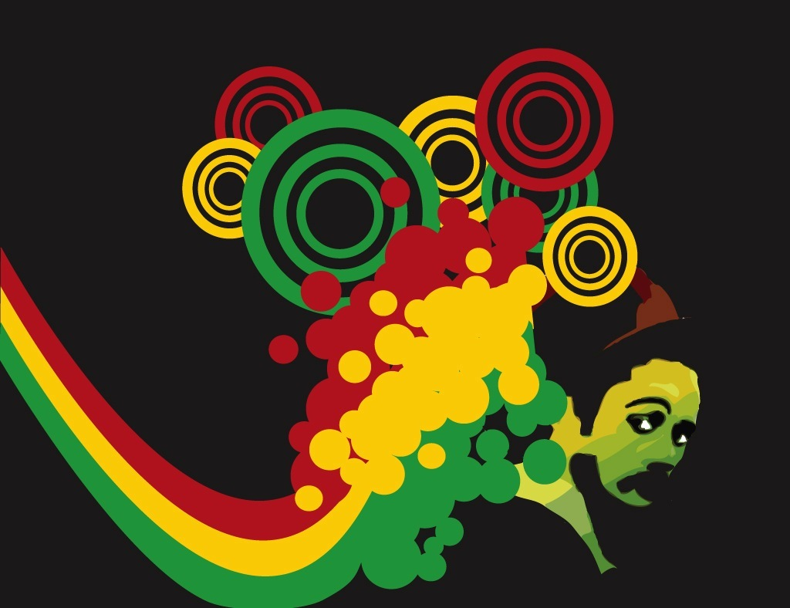
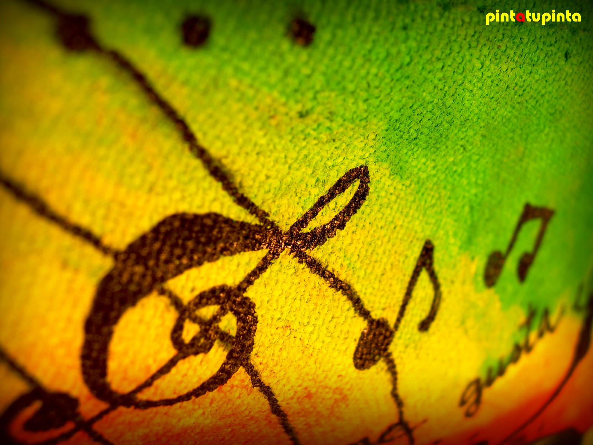
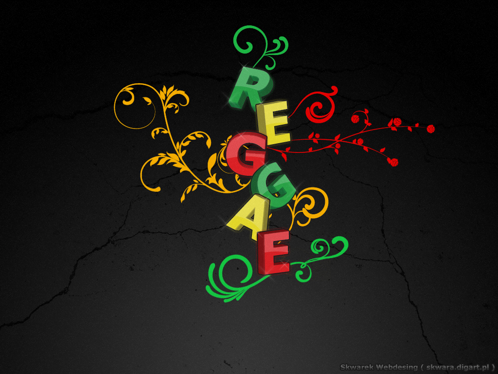

Estilos:
En Jamaica, nuevos estilos se han hecho populares, entre ellos, el Dancehall y el Ragga (también conocido como raggamuffin), probablemente influenciadas por el Hip-Hop, Drum & Bass – y otros estilos. En cualquier caso el scratch fue usado por primera vez por artistas como U-Roy Dillinger, y tuvieron una amplia repercusión.
Gracias a la labor de DJ Kool, surgió un nuevo estilo llamado Hip-Hop o la música Rap. En el sentido jamaicano de la palabra consiste en un DJ (Disc Jokey), que se encarga de poner la música, y un "MC" (Master of Ceremonies) o rapero, que recita rimas sobre ella. Los términos Jaying, Toasting o Chating son usados en Jamaica. Generalmente el término rapper se usa en todo el mundo.
Roots:
Se llama roots reggae ("reggae de raíces") a una variedad de reggae propiamente rastafari. Es un tipo de música espiritual, en cuyas letras predomina la alabanza del Dios o Jah (a menudo se exclama Rastafari queriendo decir "Rey Tafarí", que alude al nombre de nacimiento, Ras Tafari Makonnen, de Haile Selassie I Rey de Etiopia (1892-1975). Otros temas recurrentes en las letras son la pobreza y la resistencia a la opresión del gobierno. Hay quien considera que el roots reggae tuvo su cumbre a finales de los años 1970, con cantantes como Johny Clarke, Horace Andy y Lincoln Thompson trabajando con productores de estudios como Lee "Scratch" Perry, King Tubby y Coxsone Dodd. La investigación experimental de tales productores dentro de parámetros tecnológicos a menudo limitados dio paso al dub, y es vista por algunos historiadores de música como uno de la primeras contribuciones al desarrollo del techno (aunque en sonido analógico).
El roots reggae es una parte importante de la cultura jamaicana. Aunque otras formas de reggae (como el dancehall) lo han substituido en términos de popularidad en Jamaica, el Roots Reggae ha encontrado un pequeño, pero creciente lugar a nivel
mundial.
Rockers:
El rockers reggae es un subgénero de música del reggae que se hizo popular a mediados y finales de los 70, existiendo simultáneamente (Ahora extensamente apropiado) raíces de subgéneros y Dub. El nombre fue sacado del sistema de sonido de rockers, propiedad de la leyenda Dub Augusto pablo. También a veces se conocen el lovers rock, refiriéndose a la frecuencia de temas románticos en el trabajo de algunos artistas, como Gregory Isaacs, Horace Andy, Black Uhuru, Junior Muruin, y Dennis Brown, Steel Pulse, Aswad y Matumbi.
Uno de los temas principales de música de reggae ha sido la liberación social. Esto tiene tanto aspectos políticos como religiosos.
El siguiente álbum de Aerosmith fue Rocks (1976). Fue platino rápidamente y destacó dos éxitos FM, "Last child" y "Back in the saddle", además de la balada "Home tonight", la cual también figuró en las listas. Rocks ha vendido cuatro millones de copias hasta la fecha. Tanto Toys in the Attic como Rocks son altamente aclamados, especialmente en el género rock, y apareció en la lista de Rolling Stone Los mejores 500 álbumes de la historia y son citados por los Guns N' Roses, Metallica y Mötley Crue como influencias en su música. Poco después de que Rocks fue lanzado, la banda continuó de gira densamente, esta vez encabezando sus propios shows y tocando en varios estadios grandes y festivales de rock.
El siguiente álbum, Draw the line (1977), no fue tan exitoso ni aclamado como sus dos previos esfuerzos, aunque la canción "Draw the line" demostró ser un gran éxito (y sigue siendo una canción principal en vivo) y "Kings and Queens" también experimentó algo de éxito. Este álbum vendió dos millones de copias; sin embargo el abuso de drogas y el ritmo agobiante de las giras y de las grabaciones comenzaron a afectar su rendimiento. Mientras seguían con giras y grabando a fines de la década de 1970, Aerosmith actuó en la versión cinematográfica de Sgt. Pepper Lonely Hearts Club Band. Su versión del cover del éxito "Come together" de The Beatles fue incluido en la banda de sonido del álbum y sería el último éxito del Top 40 de la banda por casi 10 años. El lanzamiento del álbum en vivo, Live! Bootleg, originalmente lanzado como un álbum doble, salió en 1978 y capturó la crudeza de la banda durante el apogeo de la gira de Draw the line. El vocalista Steven Tyler y el guitarrista Joe Perry empezaron a ser conocidos como los "gemelos tóxicos" por su notorio abuso de drogas y alcohol dentro y fuera del escenario.

Formación (1969–1971)
En 1964, Steven Tyler forma su propia banda llamada The Strangeurs (Más tarde Chain Reaction) con Don Solomon en New Hampshire. Mientras tanto, Perry y Hamilton forman la banda Jam Band (Comúnmente conocida como "Joe Perry's Jam Band") Basada en el sonido del blues. Hamilton y Perry se mudan a Boston, Massachusetts en septiembre.16 En 1969, Chain Reaction and Jam Band, tocan en el mismo concierto. A Tyler inmediatamente le gusta el sonido de Jam Band y pensó que si tomaba lo clásico de su padre, y lo juntaba con la dinamicidad y el sentimiento de esa banda, tal vez podrían tener algo. En octubre de 1970, las bandas se volverían a encontrar y considerarían la propuesta. Tyler, quien había sido el baterista y vocalista de Chain Reaction, rechazaría tocar la batería en la nueva banda, ya que quería ser a toda costa, el líder y vocalista. Por esa razón se contactarían con Joey Kramer, baterista de Yonkers, Nueva York que conocía a Tyler y que siempre había soñado tocar en una banda con él. El resto estuvo de acuerdo, y nueva banda se formó, aunque todavía faltaba un nombre.
Los miembros de la banda pasaban las tardes experimentando con drogas y mirando las repeticiones de Los Tres Chiflados. Kramer contó que él escribía en la escuela la palabra aerosmith en sus cuadernos. El nombre le vino a la cabeza después de escuchar el álbum de Harry Nilsson, Aerial Ballet, nombre que estaba relacionado con un homenaje al acto circense aéreo que hacían los abuelos de Nilsson, saltando a través de un biplano. Al principio, los compañeros de banda se rehusaron ya que creyeron que se refería al libro al que fueron forzados a leer en la clase de inglés en la escuela secundaria. "No, no Arrowsmith", explicó Kramer, A-E-R-O... Aerosmith". La banda decidió llamarse así después de haber considerado "The Bananas", "Stit Jane" y "Spike Jones".
Poco tiempo después, la banda agregó a Ray Tabano, un amigo de la infancia de Tyler, como guitarrista rítmico, y comenzaron a tocar en shows locales. Aerosmith tuvo su primer concierto en Mendon, Massachusetts, en la Escuela Secundaria Nipmuc Regional en 1970. En 1971, como Tabano tenía problemas con el resto de la banda, ellos decidieron reemplazarlo con Brad Whitford. Whitford había asistido a la universidad de Berklee School of Music y había formado parte de la banda Earth Inc. A la banda le encantó la idea de tener a dos diferentes estilos de guitarristas, como Kramer los describe: "[Brad] era muy limpio y ordenado en su modo de tocar y Joe era descuidado y seguía otro ritmo". Whitford, de Reading, Massachusetts, había tocado en AW Coolidge Middle School de Reading. Quitando el período de julio de 1979 a abril de de 1984, la formación de Tyler, Perry, Hamilton, Whitford y Kramer se ha mantenido igual.
Contrato discográfico, Aerosmith, Get Your Wings y Toys in the Attic (1971–1975)
Después de formar la banda y completar la formación en 1971, comenzaron ganando algo de éxito local haciendo shows en vivo.2 Originalmente reservada través de la Agencia Ed Malhoit,17 la banda firmaría un contrato promocional con Frank Connelly y finalmente aseguraría un contrato de representación con David Krebs y Steve Leber en 1972.18 Krebs y Leber invitaron al Presidente de Columbia Records, Clive Davis, a ver a la banda en el club nocturno Max's Kansas City en la ciudad de Nueva York en 1971. La canción "No Surprize" del álbum Night in the ruts cuenta la historia de cómo fueron descubiertos.19 Aerosmith firmaría un contrato con Columbia a mediados de 1972 por un total de $125 mil y publicarían su álbum debut, Aerosmith. Lanzado en enero de 1973, el álbum alcanzaría la posición número 166.4 El álbum contenía una base de rock and roll sencillo con influencias de blues bien definidas, estableciendo las bases del sonido característico de blues-rock de Aerosmith.20 Aunque el puesto más alto del álbum lo conseguiría Dream On llegando al puesto 59,21 varios temas (como "Mama Kin" y "Walkin the dog") se convertirían en elementos indispensables en los shows en vivo de la banda, siendo emitidos frecuentemente en las radios de rock.22 La banda alcanzaría el disco de oro, vendiendo finalmente dos millones de copias y siendo certificada doble platino luego de que alcanzara el éxito comercial más de una década después.23 Luego de estar de gira constantemente, la banda lanzaría su segundo álbum Get your wings en 1974, el primero de una serie de álbumes multi-platino producidos por Jack Douglas.24 El álbum, contenía los éxitos de las radios de rock "Same Old Song and Dance" y "Train Kept A-Rollin'", un cover previamente hecho por The Yardbirds también incluía varios favoritos de los fans, como "Lord of thighs", "Seasons of wither", y "S.O.S (Too Bad)", canciones más oscuras que se convirtirían en representativas en los shows en vivo de la banda.25 Hasta la fecha, Get your wings ha vendido tres millones de copias.23
Fue Toys in the Attic de 1975, sin embargo, el que establecería a Aerosmith en el rango de estrellas internacionales, compitiendo con sus contemporáneos Led Zeppelin y los Rolling Stones. Inicialmente siendo tomados burlonamente como simples imitaciones de los Rolling Stones, en parte, debido al parecido físico entre los líderes de ambas bandas, Steven Tyler y Mick Jagger, Toys in the Attic probaría que Aerosmith era una única y talentosa banda en todo su derecho. siendo un éxito inmediato, comenzando con el sencillo Sweet Emotion, el cual se convertiría en el primer hit Top 40 de la banda. Éste sería seguido por el exitoso relanzamiento de "Dream On", el cual alcanzaría el puesto 6, convirtiéndose en el mayor éxito de la banda en los años 1970. "Walk this way", relanzado en 1976, alcanzaría el Top 10 a principios de 1977.
Además, "Toys in the Attic" y "Big Ten Inch Record" (Una canción originalmente grabada por Ball Moose Jackson) Se convertirían en claves para los conciertos. Como resultado de este éxito, los dos álbumes anteriores reaparecerían en las listas. Toys in the Attic se convertirían en el álbum de estudio más vendido en los Estados Unidos de la banda, con ocho millones de copias vendidas certificadas. La banda saldría de gira en apoyo de Toys in the Attic, obteneniendo nucho más reconocimiento del cosechado hasta ese momento. Durante esos años, Aerosmith establecería su base de operaciones "The Wherehouse" en Waltham, Massachusetts, en donde ensayaría y grabaría música, así como también haría negocios.

REGGAE
Uno de los temas principales de música de reggae ha sido la liberación social. Esto tiene tanto aspectos políticos como religiosos.
La música intenta elevar el conocimiento político de la audiencia El sueño americano no es lo que parece ¿Por qué duerme UD? (Jimmy cliff ¨ sueño americano ¨ 1983.). Alternativas del dogma ortodoxo religiosa.
Sound Systems
La única manera de escuchar música era a través de los Sound Systems. Originalmente solían ser fiestas al aire libre en el centro de Kingston, con sus 27ºC a las dos de la madrugada y el bajo que hacía vibrar la botella de Red Stripe. El truco era estar con otra gente que pensaba igual que tú; tenías el poder de la música, el ambiente era tal que lo sentías antes de oírlo, el Deejay animaba al público y cada sonido hacía reaccionar a la gente con entusiasmo. En la década de los años 50 los jóvenes jamaicanos estaban muy interesados por la música que llegaba de Estados Unidos, y que por las circunstancias sólo era posible escucharla gracias a las estaciones de música del Sur de Florida y los potentes vatios de los denominados Sound Systems. Los Sound Systems sustituyeron a las orquestas de los locales de música de los años 50. ¿Por qué pagar a una banda cuando se podían sintonizar y poner canciones de R&B americano? El coste de disponer de un toca discos o radio propios se superaba poniendo sus altavoces en la calle para que todo el mundo escuchase música. Duke "The Trojan" Reid y Clement "Sir Coxsone" Dodd y Vincet "King" Edwards fueron personajes fundamentales en el desarrollo del Sound System jamaicano de 1950. se encargaban de grabar sesiones para asegurarse un suministros de melodías exclusivas. También cabe destacar la importancia de la comunidad china asentada en Jamaica, a la que pertenecían excelentes productores asociados a los dueños de los Sound Systems. Algunos de los más importantes fueron: Lesie Kong, Byron Lee, Charlie Moo y por supuesto Vincent "Randy" Chin. Otro personaje importante fue Cecil Campbell, conocido después como Prince Buster, quien fue el primero en tener la visión y darse cuenta de la necesidad de un nuevo estilo. Enfatizó el contratiempo, es decir no en el “beat” o golpe rítmico, sino después de éste. Es así como nace el Ska. Se dice que el nombre viene cuando el futuro guitarrista de los Skatalites Jah Jerry Haines iba creando una canción como Prince Buster le había pedido y él dice que si pudiera generar el sonido con algunas letras, le sonaría a SKA SKA SKA.